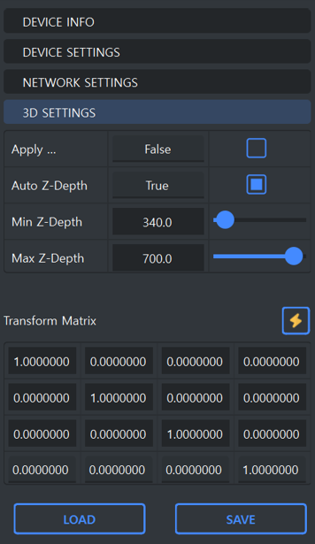

Swing3D Studio Guide
ToolBar
Visualization Tab
Property ToolBox
Log View
The log view displays a history of actions performed within Swing3D Studio.
StatusBar
The StatusBar has a warning message about the laser and a padlock icon to sign in and out.